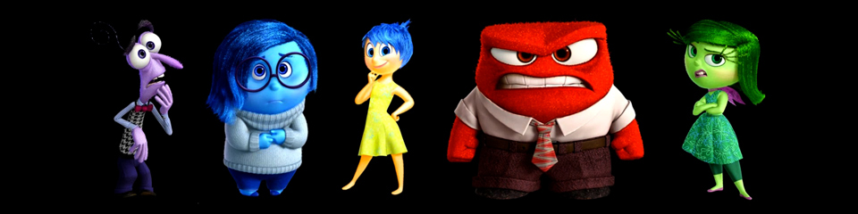

Part of the Animat Habitat™ studio workshop: Character Design for Animation.
Authored by Dane Aleksander.
Continued from The Audience.
The Character
We focus on the key characteristics of a character design that help an audience to identify an idea that drives the character in its role in a story. We then exaggerate the key characteristics of a character to make it appear larger than life. We see that an accessory, an attire, a change in appearance can serve as an extension of character, and how this can help to emphasize the background, and story arc, of a character.
a/ Inside Out. (2015) Pixar.
From director Pete Docter comes a film that explores a world we all know and has yet to be seen. Inside Out (2015), slated for release in 2015, involves a story that takes place inside the mind of a young girl, where five emotions ― Joy, Anger, Disgust, Fear and Sadness ― try to lead the girl through her life. The characters, as Docter describes, "are created with this energy because we are trying to represent what emotions would look like. They are made up of particles that actually move. Instead of being skin and solid, it is a massive collection of energy."

© PIXAR, Inside Out (2015) | Fear, Sadness, Joy, Anger, Disgust